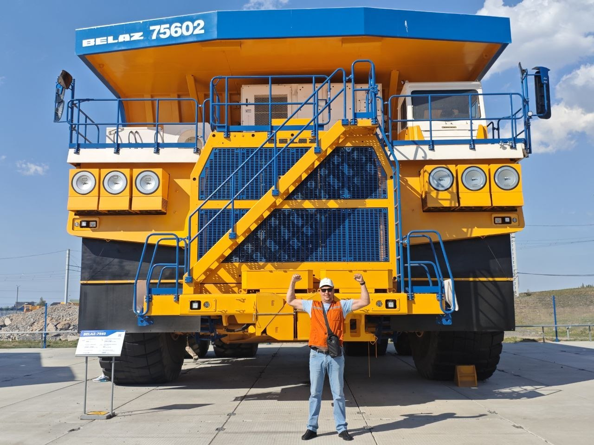
01 / РАБОТА
За рулём БелАЗа
Работа, требующая ответственности и крепкого характера. Масштаб машин тебе подходит — ты и сам человек большого масштаба.
Для кого-то он просто человек. Для меня — тот, кому по силам всё.
Начать историю Сразу к главному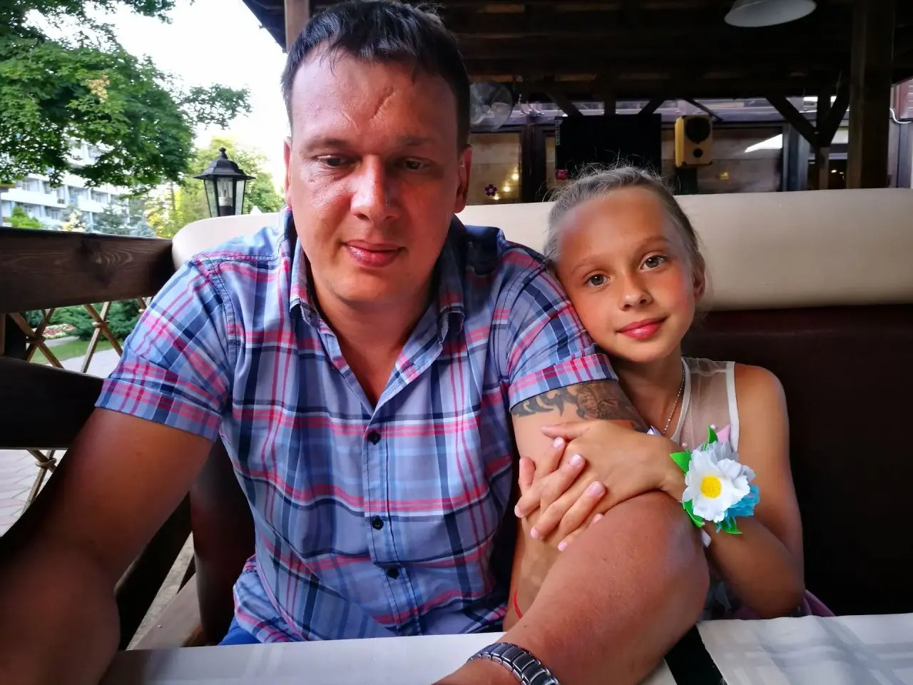
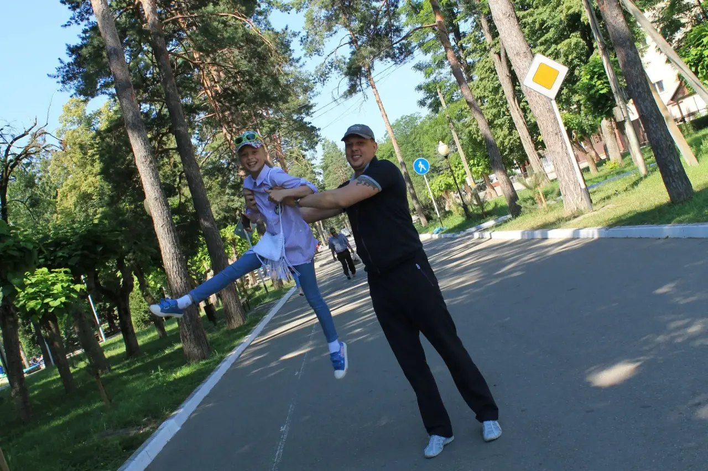
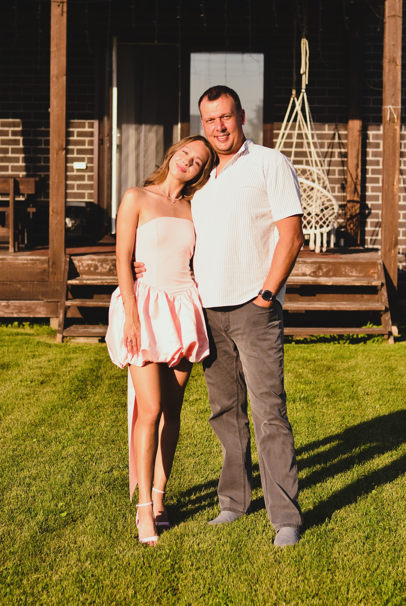
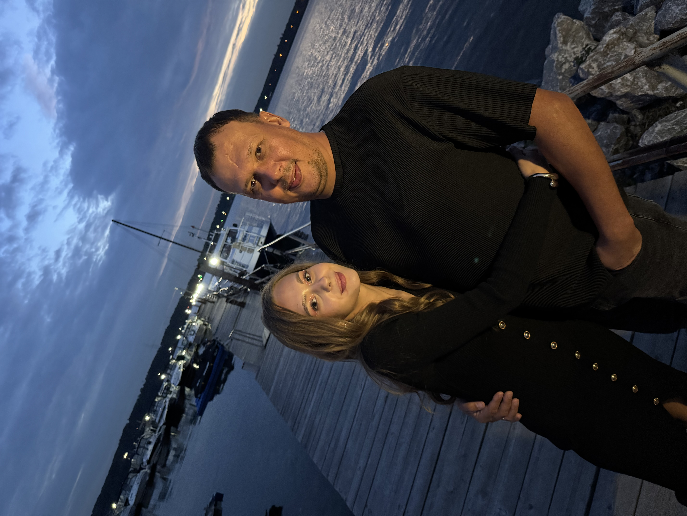
Есть люди, рядом с которыми даже большие проблемы кажутся меньше. Люди, которые умеют поддержать, рассмешить, успокоить и внушить уверенность, что всё получится.
Для меня такой человек — ты. Человек с сильным характером, золотыми руками и юмором, который невозможно перепутать ни с чьим другим.
Ты можешь разобраться почти с чем угодно: от машины до ремонта. А если что-то решил — будешь идти до конца.
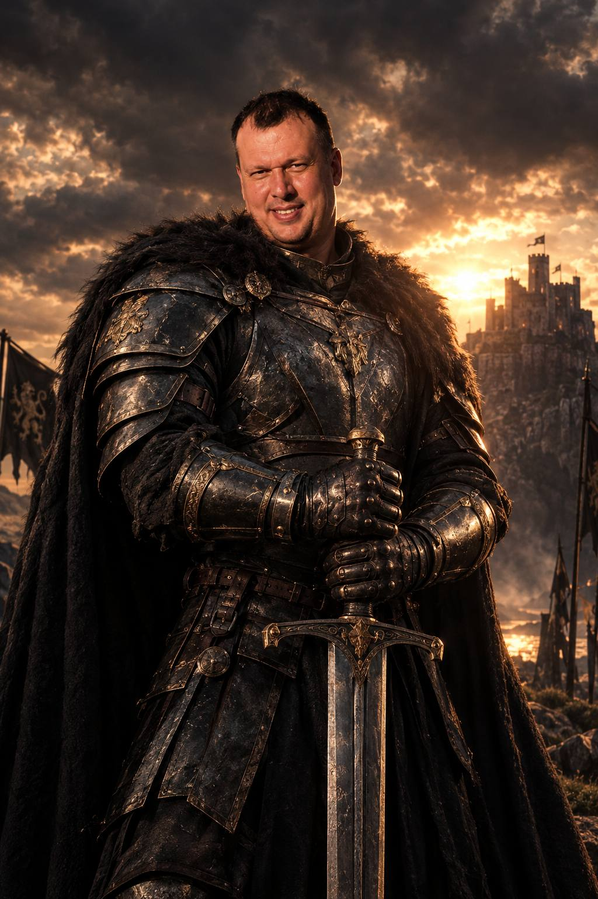
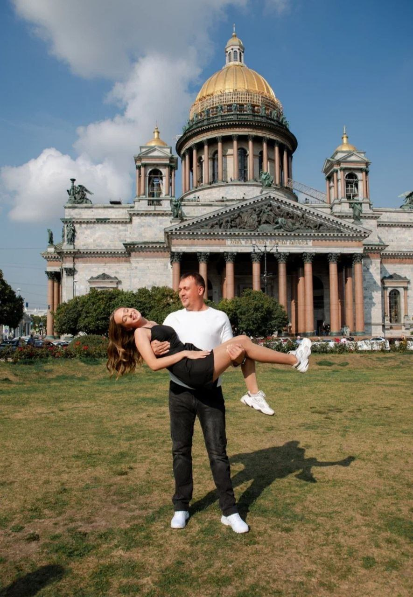
Я не всегда говорю вслух всё, что чувствую. Но это совсем не значит, что я чувствую мало.
Я благодарна тебе за всё, что ты для меня сделал, за наши встречи, поездки, сюрпризы и воспоминания. Спасибо за то, что ты есть.
Мне дорого, что мы стали ближе. И я очень рада, что ты есть в моей жизни.
Для кого-то это просто сходство. Для меня — гордость. Потому что для меня ты самый красивый, с самым сильным характером и самым смешным юмором. Мне приятно, что во мне есть частичка тебя. Хотя, конечно, я ещё и твоя лучшая версия :)
Гараж, машины, инструменты и очередная задача, с которой папа обязательно разберётся.

Работа, требующая ответственности и крепкого характера. Масштаб машин тебе подходит — ты и сам человек большого масштаба.
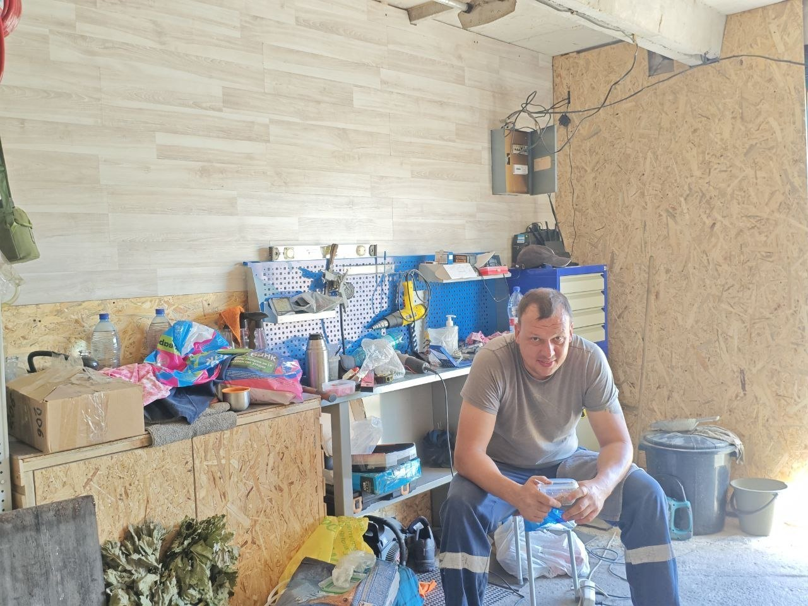
Ты умеешь сделать пространство удобным, красивым и своим. А если что-то сломалось — это просто ещё одна задачка для тебя.
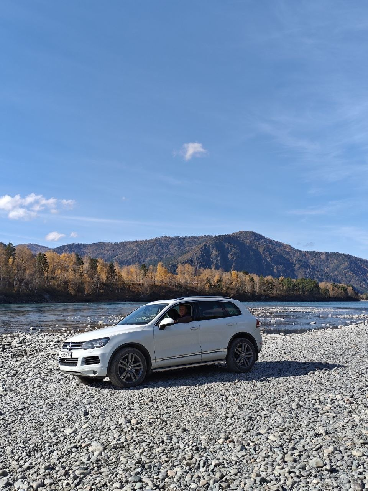
Твой Touareg должен быть безупречным, такой идеально чистой машины еще никто не видел
Некоторые истории я помню до сих пор. Некоторые теперь звучат так, будто их придумал маленький сценарист с очень богатой фантазией.
Ты держал велосипед, пока я боялась ехать одна. А потом отпустил — и я поехала! Тогда мне показалось, что ты меня предал: обещал же не отпускать. Сейчас понимаю, что именно так я и научилась.
Ты любил томатный сок с солью, а я обожала играть в бармена. Однажды приготовила тебе «авторский коктейль» с таким количеством соли и специй, что пить его было невозможно. Никто не оценил моё мастерство. Считаю, что вы просто не разбирались в высокой кухне.
Пока ты мыл машину и покрывал её пеной, я сидела внутри и представляла, что нахожусь в снежном замке. Ты занимался обычными делами, а у меня было целое приключение.
Мне подарили дорогую летающую фею на управлении рукой. Мы пошли во двор тестировать подарок, случайно переборщили с управлением — и фея улетела на дерево. Конечно, после этого она сломалась. На этом её короткая лётная карьера закончилась.
Под нашим балконом рос огромный, по моим детским меркам, красивый гриб. Однажды папа поздно вернулся с работы и, кажется, забыл ключи. То ли он залезал через балкон, то ли стучал по нему — точно уже не вспомнить. Утром гриб оказался раздавлен. Мы так и не выяснили, что случилось, но главным подозреваемым назначили папу. Ахах.
У папы всегда было любимое место за обеденным столом — его стул. Если папа собирался кушать, садиться на него никому было нельзя. У каждого героя должно быть своё тронное место.
Мы поехали куда-то на Обское море двумя машинами, вместе с бабушкой и дедушкой. Папина машина застряла, и дедушка пытался вытащить её своей машиной. Семейная экспедиция в действии.
Папа всегда очень сильно меня щекотал — иногда прямо до слёз. Но мне всё равно нравилось смеяться с ним и так получать его внимание.
В детстве папа называл меня Жуком и Жучком. А ещё я любила повиснуть у него на руке: он сгибал её, я цеплялась и висела. Маленький Жучок всегда находил способ быть поближе к папе.
Иногда папа брал меня с собой в магазин. Если я шла с ним, он покупал мне киндер-яйцо. Я была так рада этому маленькому подарку. Наверное поэтому я сейчас так обожаю киндеры.
Когда папа брал меня в гости к своему другу в гараж, я чувствовала себя его бизнес-помощницей. Не знаю, какие важные задачи я там решала, но ощущение у меня было именно такое. Ахах.
Пока папа уходил в магазин, я ждала его на подлокотнике посередине сидений, а если он долго не возвращался — пересаживалась за руль и представляла, что это моя машина. Однажды я покрутила руль заглушённой машины, он заблокировался, и я решила, что всё сломала. Папа пошутил, что теперь мы не сможем повернуть домой. После этого я предпочитала включать только аварийку.
Я любила лазить по дивану и однажды случайно наступила маленькой ножкой в папин пивной стакан. Сначала меня наругали, а потом мы так смеялись, потому что от меня пахло пивом и казалось, будто я уже в детстве «бухаю».
И это только часть нашей семейной коллекции. Уверена, мы ещё вспомним немало историй.
Джубга, Абхазия и Сочи, Горячий Ключ, северные дороги зимой и Санкт-Петербург на мой пятнадцатый день рождения. Места меняются, а воспоминания остаются.
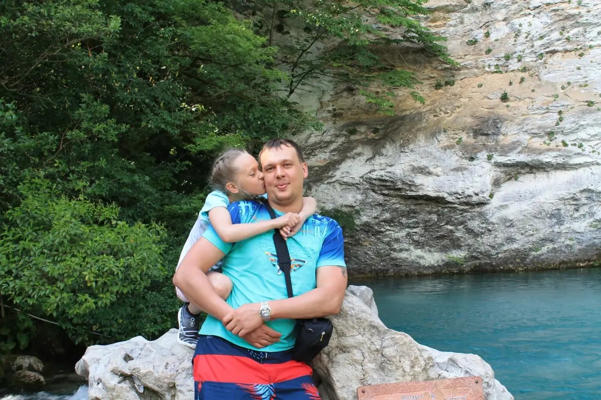
Невероятные приключения для маленькой Саши, которая попала в сказку.
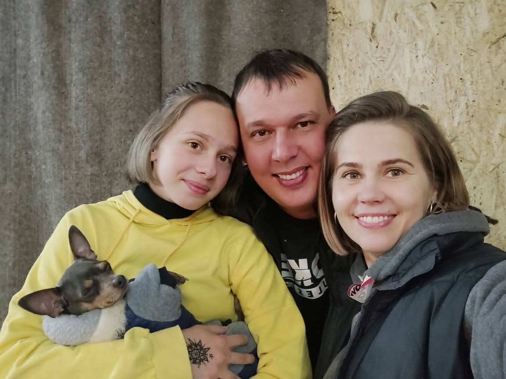
Поездки туда, где вы жили, и первая зимняя дорога с папой. Не просто путь на карте, а отдельная глава нашей истории.
Поездка-сюрприз, красивые сборы, фотографии, ресторан и вечерняя прогулка на мотоцикле. День рождения, который я запомнила.
Ты не певец и никогда не пытался им быть. Но ради меня ты пришёл в студию и записал песню — подарок, в котором было гораздо больше, чем просто музыка.
На мой восемнадцатый день рождения ты устроил сюрприз, которого я совсем не ожидала. И среди всего этого была песня от тебя. Я знаю, сколько любви стоит за этим поступком, и никогда не забуду его.
«Доча, доченька моя.. самая красивая...»
Ты сделал то, чего обычно не делаешь, — специально для своей дочери.
Нажми на конверт. Здесь слова, которые я не всегда говорю вслух.
Пап, я не всегда говорю тебе всё это вслух, поэтому хочу, чтобы ты прочитал.
Спасибо тебе за всё, что ты для меня сделал. За большие поступки и маленькие моменты, за заботу, поддержку, наши поездки, сюрпризы и воспоминания, которые я храню до сих пор. Спасибо за то, что ты есть.
Я безумно горжусь тобой. Твоими достижениями, твоим характером, тем, как ты умеешь добиваться своего и справляться с тем, перед чем другие могли бы отступить. Иногда я радуюсь твоим успехам даже сильнее, чем собственным, потому что для меня они правда много значат.
Знаешь, какой комплимент для меня самый приятный? Когда мне говорят, что я похожа на тебя. Для кого-то это просто слова, а для меня — огромная гордость. Потому что я считаю тебя самым красивым, восхищаюсь твоим характером и обожаю твой юмор. Мне приятно, что во мне есть частичка тебя. Но не переживай — я всё-таки твоя лучшая версия.
Я не знаю, сомневался ли ты когда-нибудь в том, хороший ли ты папа. Но хочу, чтобы ты знал: я помню то, что ты для меня делал, я это ценю и благодарна тебе. Я счастлива, что мы стали ближе, и очень хочу, чтобы впереди у нас было ещё много общих историй.
Для меня ты не обязан быть идеальным, не должен всё уметь и всегда быть сильным. Ты просто мой папа — человек, которым я восхищаюсь, за которого радуюсь и которого очень люблю.
Ты мой герой, папа.
Твой Жучок ❤️